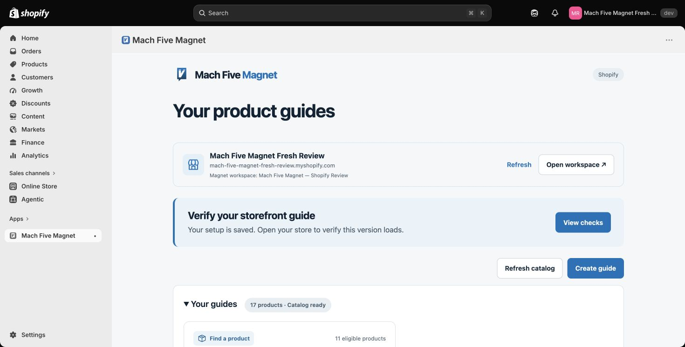
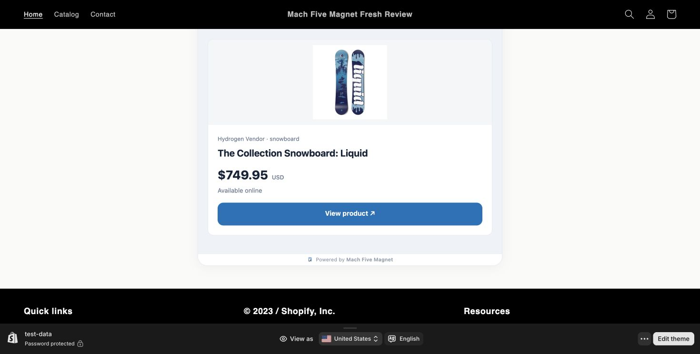
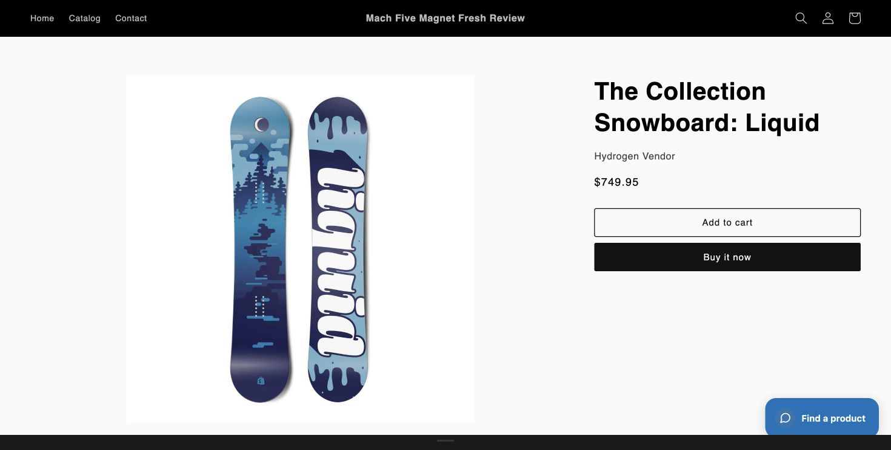
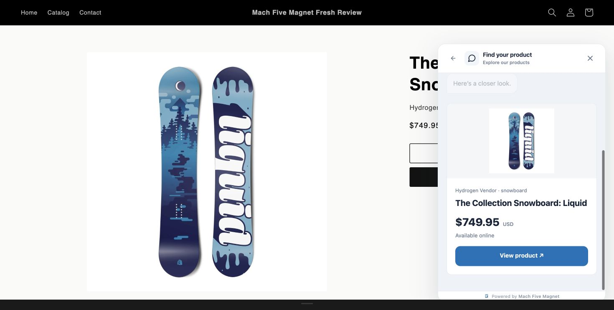

October 17, 2026 · App review evidence
Mach Five Magnet: reviewer access and storefront guides
Retested installation on a newly created development store with Shopify-generated test products. These screenshots show the deployed app and storefront, not a fixture.
Reviewer access
The working reviewer username and password have been saved in Shopify’s private App testing information. Email/password sign-in was successfully tested, and the same reviewer workspace was connected to a fresh store. No credentials are published on this page.
- Install and open Mach Five Magnet in your test store, then choose Connect Magnet.
- In the Magnet window, use the Username and Password in App testing information. Use email/password sign-in. “Continue with Shopify” requires a previously linked Shopify identity.
- Confirm Mach Five Magnet — Shopify Review, then select Connect & import catalog.
- Wait for the imported product count and choose Open builder in Shopify. This reviewer workspace already has Pro access; no additional subscription is required.
The fresh-store test imported 17 products and created a new guide using 11 eligible products. Existing guides from other stores remain scoped to those stores.

Theme app extension on the storefront
Two defects were corrected: a publication check still restricted Shopify guides to inline mode, and the generated theme’s div:empty rule hid floating widgets whose content lives in a shadow root. The publication fix is deployed, and theme extension version mach-five-magnet-15 protects the inline, chat, slide-in and pop-up hosts.
Inline guide
- Create a guide, save it, then select Publish guide.
- Choose Check storefront → Use this guide to assign it to your store.
- Use Add block in theme editor to add Inline conversation to an Apps section. Position it and save the Shopify theme.
- Open the actual storefront using the theme editor’s View action. Answer a question, select a recommendation and choose View product.

Floating guide
- In Magnet’s guide editor, open Website & setup, select Chat bubble, and publish the changes.
- In the Shopify theme editor, enable Floating conversation under App embeds and save.
- Open a storefront page and click Find a product. If Shopify’s preview toolbar covers the launcher, collapse that toolbar using its center handle.


The Shopify theme editor intentionally shows a placement placeholder and does not record conversations. Test the interactive guide on the storefront outside the editor. An inline guide does not become floating simply by enabling the embed; its published placement must match.
Development stores may be password protected. Use your store’s password or its authenticated theme preview. Publishing a Magnet guide does not publish an unpublished Shopify theme.